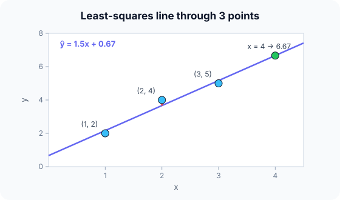

Prerequisites
- MSE.
- Mean of a list of numbers.
- The equation of a line, $y = wx + b$.
The analogy
Everyday analogy
Think of stretching a rubber band through a scatter of nails so that it sits as close to all of them as possible, with long gaps pulling hardest.
Least squares does exactly that: each point "pulls" the line with a force that grows with the square of its distance, and the line settles where those pulls balance.
How it works
Model: $\hat y = w x + b$ (one feature) or $\hat y = w^\top x + b$ (several). The fit minimises the mean squared error on the training data.
Start with three points by hand
Points (1, 2), (2, 4), (3, 5). For one feature: $w = \sum (x_i - \bar x)(y_i - \bar y) / \sum (x_i - \bar x)^2$ and $b = \bar y - w \bar x$. Predict, then open "Check".
Example: predict before you read
Step 1. Compute $\bar x$ and $\bar y$.
Check
$\bar x = 2$, $\bar y = 11/3 \approx 3.67$.
Step 2. Cover the next line and guess: the numerator and denominator of $w$.
Check
Numerator $(-1)(-1.67) + 0 + (1)(1.33) = 3$. Denominator $1 + 0 + 1 = 2$. So $w = 1.5$.
Step 3. Compute $b$ and the prediction for $x = 4$.
Check
$b = 3.67 - 1.5 \cdot 2 \approx 0.67$. Prediction $1.5 \cdot 4 + 0.67 \approx 6.67$.

Quick recall: Before reading further, cover the text above and say out loud: what does the slope $w = 1.5$ mean?
Check your answer
Each extra unit of $x$ adds 1.5 to the predicted $y$.
Finish the picture: check the fit
Use the fitted line $\hat y = 1.5x + 0.67$ on the three training points.
- Residuals $y - \hat y$. Predict them.
Check
$2 - 2.17 = -0.17$, $4 - 3.67 = 0.33$, $5 - 5.17 = -0.17$.
- Training MSE. Predict it.
Check
$(0.028 + 0.111 + 0.028)/3 \approx 0.056$. No other line has a smaller MSE on these points.
Quick recall: Without scrolling up, say out loud: what are the three residuals, and what is their sum?
Check your answer
−0.17, 0.33, −0.17. They sum to 0, which always happens for a least-squares line with an intercept.
Full worked calculation
Now the whole fit on the three points (1, 2), (2, 4), (3, 5), with every intermediate number, then how good the line is. Keep the table in view: each column is used by one step.
| Point | $x_i$ | $y_i$ | $x_i - \bar x$ | $y_i - \bar y$ | product | $(x_i - \bar x)^2$ |
|---|---|---|---|---|---|---|
| 1 | 1 | 2 | −1 | −1.667 | 1.667 | 1 |
| 2 | 2 | 4 | 0 | 0.333 | 0 | 0 |
| 3 | 3 | 5 | 1 | 1.333 | 1.333 | 1 |
| Sum | 6 | 11 | 0 | 0 | 3 | 2 |
-
1Compute the means
$$\bar x = \frac{1 + 2 + 3}{3} = 2, \qquad \bar y = \frac{2 + 4 + 5}{3} = \frac{11}{3} \approx 3.667$$The best line always passes through the "centre of gravity" of the data, $(\bar x, \bar y)$, so we need it first. Every later number is measured relative to these two means.
-
2Measure how x and y move together
$$S_{xy} = \sum (x_i - \bar x)(y_i - \bar y) = 1.667 + 0 + 1.333 = 3$$Each product is positive when a point is above average in both $x$ and $y$ (or below in both). A positive total means $y$ tends to rise with $x$. This is the "product" column of the table.
-
3Measure how much x varies
$$S_{xx} = \sum (x_i - \bar x)^2 = 1 + 0 + 1 = 2$$This is the spread of the inputs. Dividing by it turns "how much $x$ and $y$ move together" into "how much $y$ moves per unit of $x$".
-
4Slope and intercept
$$w = \frac{S_{xy}}{S_{xx}} = \frac{3}{2} = 1.5, \qquad b = \bar y - w\bar x = 3.667 - 1.5 \cdot 2 = 0.667$$The slope says each extra unit of $x$ adds 1.5 to the prediction. The intercept is chosen so the line passes exactly through $(\bar x, \bar y) = (2, 3.667)$.
-
5Predictions and residuals
$$\hat y = [2.167,\; 3.667,\; 5.167], \qquad e = y - \hat y = [-0.167,\; 0.333,\; -0.167]$$Plug each $x$ into $1.5x + 0.667$. The residuals add up to exactly 0: a least-squares line with an intercept always balances points above and below it.
-
6Training error (MSE)
$$\text{MSE} = \frac{(-0.167)^2 + 0.333^2 + (-0.167)^2}{3} = \frac{0.0278 + 0.1111 + 0.0278}{3} \approx 0.0556$$On average the squared miss is 0.056, i.e. a typical error of $\sqrt{0.0556} \approx 0.24$ in the units of $y$. No other straight line has a smaller MSE on these three points.
-
7How much variation is explained (R²)
$$\text{SS}_{\text{tot}} = \sum (y_i - \bar y)^2 = 2.778 + 0.111 + 1.778 = 4.667, \qquad R^2 = 1 - \frac{0.1667}{4.667} \approx 0.964$$$\text{SS}_{\text{tot}}$ is the error of the lazy model "always predict 3.667". Our line removes 96.4% of that error, so $x$ explains most of the variation in $y$.
-
8Use the model on new data
$$\hat y(4) = 1.5 \cdot 4 + 0.667 = 6.667$$Prediction is just one multiplication and one addition. Be careful with values far outside 1–3: the model has never seen them, and the straight-line assumption may not hold there.
What the numbers tell us
Three sums ($\bar x$, $\bar y$, $S_{xy}$, $S_{xx}$) are all you need to fit a line exactly: $w = 1.5$, $b \approx 0.667$.
The fit is very good here ($R^2 \approx 0.96$, typical error about 0.24). If $R^2$ were near 0, a straight line would be the wrong model for this data.
The rule in plain words
Choose $w$ and $b$ to minimise $\frac{1}{n}\sum (y_i - w x_i - b)^2$. With one feature, use the closed-form slope and intercept above.
With many features, solve the normal equations $w = (X^\top X)^{-1} X^\top y$, or use gradient descent when the data is large.
Quick recall: Before you read the code, describe the steps to fit $w$ and $b$, in your own words. Then check below.
Check your answer
Compute the means of $x$ and $y$. Sum the products of the deviations and the squared $x$ deviations; their ratio is $w$. Then $b$ is the mean of $y$ minus $w$ times the mean of $x$.
The code
Read this code after you have fitted the line by hand. It will make more sense.
void fit_line(double x[], double y[], int n, double out[]) { /* out = {w, b} */
double mx = 0, my = 0, sxy = 0, sxx = 0;
for (int i = 0; i < n; i++) { mx += x[i] / n; my += y[i] / n; }
for (int i = 0; i < n; i++) {
sxy += (x[i] - mx) * (y[i] - my); /* how x and y move together */
sxx += (x[i] - mx) * (x[i] - mx); /* how much x varies */
}
out[0] = sxy / sxx; /* slope w */
out[1] = my - out[0] * mx; /* intercept b */
}Definition
What you just did, in one line: linear regression models the target as a weighted sum of the features plus a bias, $\hat y = w^\top x + b$, with weights chosen to minimise the mean squared error.
flowchart LR
X["features x"] --> M["ŷ = w·x + b"]
M --> L["MSE against y"]
L -->|"closed form or gradient descent"| W["update w, b"]
W --> M
How costly is it?
Quick recall: Before looking at the formula, predict: why minimise squared errors instead of absolute errors?
Check your answer
Squares give a smooth objective with a closed-form solution, and they punish big errors more.
Training minimises the mean squared error; for several features the exact solution is:
$$\min_{w, b} \; \frac{1}{n}\sum_{i=1}^{n} \big(y_i - (w^\top x_i + b)\big)^2 \quad\Longrightarrow\quad w = (X^\top X)^{-1} X^\top y$$| Phase | Cost | Why |
|---|---|---|
| Training, one feature | $O(n)$ | Two passes over the data |
| Training, $d$ features (normal equations) | $O(nd^2 + d^3)$ | Build $X^\top X$, then invert it |
| Training, gradient descent | $O(nd)$ per epoch | One pass per epoch |
| Prediction | $O(d)$ | One dot product |
Best for: numeric targets with roughly linear relationships, and whenever you need an interpretable baseline.
- Pro: Fast to train, exact closed-form solution.
- Pro: Weights are directly interpretable.
- Con: Cannot capture curves or interactions unless you add such features yourself.
- Con: Sensitive to outliers, because errors are squared.
Warning
Linear regression assumes the relationship is roughly linear. Fitting a line to a U-shaped pattern gives a bad model with a perfectly valid-looking formula; always plot the residuals.
Exam tip
Be able to compute $w$ and $b$ by hand for 3–4 points with the deviation formulas, and to interpret them in words ("each extra room adds 20,000 € to the price").
Common mistakes
- Dividing the slope formula the wrong way round ($\sum (x - \bar x)^2$ is the denominator).
- Extrapolating far outside the range of the training $x$ values.
- Interpreting weights of unscaled, correlated features as importance.
Try it yourself
Exercise 1 (warm-up)
Fit a line to (0, 1), (1, 3), (2, 5).
Hint
The points lie exactly on a line.
Answer
$w = 2$, $b = 1$: $\hat y = 2x + 1$, with zero error.
Exercise 2 (a bit harder)
Fit a line to (1, 1), (2, 3), (3, 2), (4, 4) and predict $x = 5$. Write your answer down before you open it.
Show answer
$\bar x = 2.5$, $\bar y = 2.5$; numerator $= 2.25 - 0.25 - 0.25 + 2.25 = 4$; denominator $= 5$; $w = 0.8$, $b = 2.5 - 2 = 0.5$. Prediction at 5: $4.5$.
Did you know?
Did you know?
The word "regression" comes from Francis Galton (1886): very tall parents tended to have children closer to average height, "regressing towards the mean".
Neural networks end with a linear layer, and logistic regression is linear regression passed through a sigmoid, so this simple model is a building block of much bigger ones.
Key points to remember
If you remember one thing from each line, remember the because.
- The slope is a ratio of covariance to variance because it measures how much $y$ moves per unit move of $x$.
- The line passes through $(\bar x, \bar y)$ because $b = \bar y - w \bar x$.
- Residuals sum to zero because the least-squares intercept balances positive and negative errors.
- Outliers have a big influence because squared errors grow fast with distance.
- Prediction is cheap because it is a single weighted sum.
Self-check questions
Answer these in order, out loud. They follow the page, so your answers become the script of your video.
- How is a least-squares line like a rubber band through nails?
Sample answer
Each point pulls the line towards itself, more strongly the further away it is, and the line settles where the pulls balance.
- Fit a line to (1, 2), (2, 4), (3, 5).
Sample answer
$\bar x = 2$, $\bar y = 3.67$; $w = 3/2 = 1.5$; $b = 3.67 - 3 = 0.67$. So $\hat y = 1.5x + 0.67$.
- Why does the code compute the means in a first loop?
A good answer mentions deviations.
Sample answer
The slope uses deviations from the means, $x_i - \bar x$ and $y_i - \bar y$, so the means must be known before those sums are built.
- So what is linear regression, in one sentence?
Sample answer
A model that predicts a number as a weighted sum of the features plus a bias, fitted by minimising the mean squared error.
- Why does the least-squares line always pass through the point of means?
A good answer uses the formula for $b$.
Sample answer
Because $b = \bar y - w \bar x$, so at $x = \bar x$ the prediction is $w\bar x + \bar y - w \bar x = \bar y$.
- What do training and prediction cost?
Sample answer
Training is $O(n)$ for one feature, $O(nd^2 + d^3)$ with the normal equations for $d$ features; prediction is $O(d)$.
- Give two pros and two cons of linear regression.
Sample answer
Pros: fast exact training and interpretable weights. Cons: only linear patterns, and sensitive to outliers.
- If you had to teach this to a friend in 2 minutes, what would you leave out, and why?
Sample answer
I'd leave out the normal equations and the residual-sum property. I'd keep the rubber-band analogy, the 3-point fit with $w = 1.5$, and "line that minimises squared errors".
External resources
- scikit-learn: Ordinary least squares: LinearRegression with examples.
- Google ML Crash Course: Linear regression: interactive introduction.
- Wikipedia: Simple linear regression: the slope and intercept formulas.
Videos
- YouTube search: StatQuest linear regression: StatQuest's clear walkthrough.